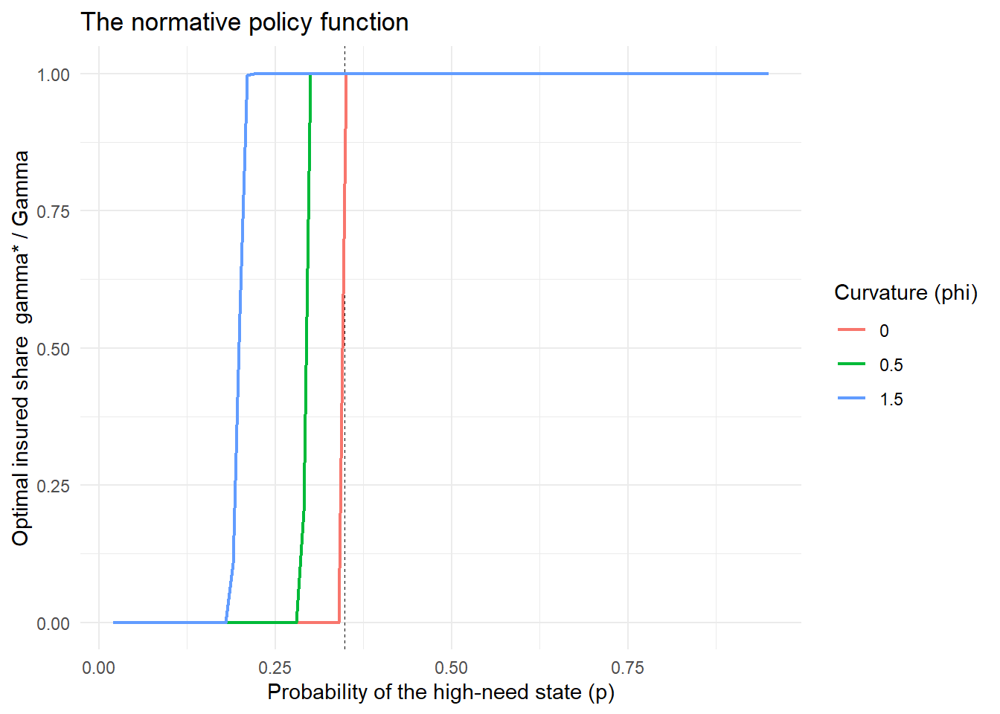

flowchart TB Q["Policy question:<br/>did the rule help consumers?"] --> D["Descriptive model:<br/>reproduce observed choices"] Q --> S["Structural model:<br/>recover policy-invariant<br/>preferences and costs"] Q --> N["Normative model:<br/>characterize the optimal<br/>choice given objective<br/>and constraints"] D --> D2["Licenses: prediction<br/>within the observed regime"] S --> S2["Licenses: counterfactual<br/>equilibria and full welfare<br/>Costs: functional forms,<br/>identification burden"] N --> N2["Licenses: the words<br/>optimal, mistake, and<br/>welfare bound<br/>Costs: none if it stays small"] N2 --> W["Departures from N become<br/>the measurement target"]
70 Normative Benchmarks: Models of Optimal Behavior
You cannot call a choice a mistake without saying what the right choice was. This is the sentence that separates a policy paper that survives review from one that does not. An evaluation showing that a rule changed behavior establishes that consumers responded; it establishes nothing about whether the response was good. To get from “borrowing rose” to “students were made better off,” someone has to write down what an unconstrained, well-informed, correctly-optimizing consumer would have done in the same situation—and then measure the distance between that benchmark and the behavior actually observed.
This chapter is about constructing that benchmark. The object is a normative model: a small analytical model of the consumer’s problem whose solution characterizes optimal behavior, whose comparative statics generate testable predictions, and whose parameters are quantities that can be measured or bounded rather than assumed. It is deliberately not a full structural model estimated on the data. The distinction is central and is developed in Section 70.1: a normative model earns its place by being smaller than a structural model, because it is asked to do less.
The running construction is the student-borrowing model of Brown, Grodzicki, and Medina (2026), which is unusually well suited to teaching because it is simple enough to solve on paper and rich enough to generate a threshold rule, a welfare formula, and four distinct forms of consumer error. We build it from primitives, derive its central proposition, catalogue the departures from it, and then abstract the recipe so it can be re-used on marketing problems that have nothing to do with credit.
70.1 What a Normative Model Is For
Marketing research uses models for at least three incompatible purposes, and conflating them produces papers that satisfy nobody.
A descriptive model reproduces observed behavior. Its success criterion is fit, and its parameters are whatever makes the fit good.
A structural model recovers deep parameters—preferences, costs, beliefs—that are invariant to the policy under study, so that counterfactual equilibria can be simulated (Chapter 36). Its success criterion is that the recovered parameters are policy-invariant and identified, which is demanding, and it usually requires functional-form commitments the theory does not justify (Nevo and Whinston 2010; Rust 2014).
A normative model characterizes what an agent should do given a stated objective and constraint set. Its success criterion is neither fit nor identification: it is that the optimality conditions are correct, that the predictions distinguish optimizing from non-optimizing agents, and that the comparative statics are sharp enough to be refuted. A normative model is allowed to be wrong about average behavior. Indeed, if consumers systematically deviate from it, that gap is the paper’s finding.
Figure 70.1 places the three side by side and shows what each licenses.
The practical consequence is a sequencing rule. Write the normative model before looking at the mechanism data, because its role is to tell you which survey questions and which behavioral signatures are diagnostic. A model written after the fact to rationalize a pattern is a description with equations.
70.2 Building a Normative Model From Primitives
We now construct the benchmark. The economic content is a tension every marketing scientist will recognize: a cheap instrument that must be committed to in advance versus an expensive instrument that can be deployed after uncertainty resolves. Call it the price-versus-flexibility trade-off. In the borrowing application, the cheap-but-inflexible instrument is a student loan, taken at the start of the year at a low posted rate on the full amount; the expensive-but-flexible one is a credit card, a line of credit drawn only if and when the need materializes, at a much higher rate.
70.2.1 Primitives
At the start of period \(t\) a consumer must finance consumption. She holds outside funds \(w\) and enters with debts \(b^{c}_{0}\) on the flexible instrument and \(b^{s}_{0}\) on the committed one, writing \(b_0 = b^{c}_{0} + b^{s}_{0}\). Period utility is defined relative to a subsistence requirement \(\underline{x}_t\):
\[ u_t(x) \;=\; \begin{cases} v_t\!\left(x - \underline{x}_t\right), & x \ge \underline{x}_t,\\[2pt] -\infty, & x < \underline{x}_t, \end{cases} \tag{70.1}\]
with \(v_t\) twice differentiable, increasing, and concave. The \(-\infty\) branch is doing real work: it says the requirement must be met, which is what makes the financing decision non-trivial rather than a smooth trade-off against consumption. Subsistence is stochastic and binary,
\[ \underline{x}_t \;=\; \begin{cases} h & \text{with probability } p,\\ \ell & \text{with probability } 1-p, \end{cases} \qquad h > \ell , \tag{70.2}\]
so \(p\) is the probability of the high-need state—an unexpected expense, an emergency, a demand shock. The consumer chooses borrowing \(b^{s}_{t}\) and \(b^{c}_{t}\) to solve
\[ \max_{b^{s}_{t},\, b^{c}_{t}} \; u_t(x_t) \;+\; \beta V_t\!\left((1+r^{s})b^{s}_{t} + (1+r^{c})b^{c}_{t}\right), \tag{70.3}\]
subject to an accounting constraint tying consumption to endowment and net new borrowing, non-negativity, a card limit \(\overline{b}^{c}\), and an availability limit on the committed instrument. Here \(0 \le r^{s} < r^{c} \le 1\) and \(\beta \in (0,1)\); the continuation value \(V_t\) is decreasing in debt carried forward, twice differentiable, and weakly concave.
Two structural features generate everything that follows. First, the committed instrument is chosen before the state is realized and accrues interest on the full amount drawn, whether or not it is spent. Second, the flexible instrument is drawn after the state is known, at a higher price. This is insurance pricing: paying \(r^{s}\) with certainty to avoid paying \(r^{c}\) in a state that occurs with probability \(p\).
70.2.2 Reduction to a one-dimensional insurance problem
Because the committed instrument is strictly cheaper, any known expense—existing debt, certain future outlays—is optimally financed with it. The only interesting decision concerns the uncertain portion. Define the uncertain shortfall
\[ \Gamma \;\equiv\; \begin{cases} 0, & w - b_0 > h,\\ h - (w - b_0), & \ell < w - b_0 < h,\\ h - \ell, & w - b_0 < \ell, \end{cases} \tag{70.4}\]
the amount the consumer would have to borrow in the high state but not in the low state. The decision collapses to a single scalar: how much of \(\Gamma\) to insure in advance. Let \(\gamma \in [0,\Gamma]\) be the insured amount. Writing \(A_h = (1+r^{s})(b_0 + h - w)\) and \(A_\ell = (1+r^{s})(b_0 + \ell - w)\) for the baseline debt carried into each state, the problem becomes
\[ \max_{0 \le \gamma \le \Gamma} \; J(\gamma) \;\equiv\; v_t(0) \;+\; p\,V_t\!\left(A_h + (r^{c}-r^{s})(\Gamma-\gamma)\right) \;+\; (1-p)\,V_t\!\left(A_\ell + r^{s}\gamma\right). \tag{70.5}\]
Read the two terms. In the high state the consumer needed all of \(\Gamma\); the insured part cost her the cheap rate, and the uninsured remainder \(\Gamma - \gamma\) must be drawn on the flexible instrument, costing an extra \((r^{c}-r^{s})\) per dollar. In the low state she did not need the money, and the \(\gamma\) she borrowed in advance costs her \(r^{s}\gamma\) for nothing. Insurance has a premium and a payout, exactly as it should.
70.2.3 The optimality condition and the threshold rule
Differentiating Equation 70.5,
\[ J'(\gamma) \;=\; -\,p\,(r^{c}-r^{s})\,V_t'\!\left(A_h + (r^{c}-r^{s})(\Gamma-\gamma)\right) \;+\; (1-p)\,r^{s}\,V_t'\!\left(A_\ell + r^{s}\gamma\right). \tag{70.6}\]
Since \(V_t' < 0\), the first term is positive (insuring lowers debt in the state where debt is high) and the second is negative (insuring raises debt in the state where it was unnecessary). Full insurance \(\gamma^{*} = \Gamma\) is optimal when \(J'(\Gamma) \ge 0\), that is when
\[ p\,(r^{c}-r^{s})\,\bigl|V_t'(A_h)\bigr| \;\ge\; (1-p)\,r^{s}\,\bigl|V_t'(A_\ell + r^{s}\Gamma)\bigr| , \tag{70.7}\]
and zero insurance \(\gamma^{*}=0\)—financing the whole shortfall on the expensive flexible instrument—is optimal when \(J'(0) \le 0\), that is when
\[ p\,(r^{c}-r^{s})\,\bigl|V_t'\!\left(A_h + (r^{c}-r^{s})\Gamma\right)\bigr| \;\le\; (1-p)\,r^{s}\,\bigl|V_t'(A_\ell)\bigr| . \tag{70.8}\]
Because \(V_t\) is concave and decreasing, \(|V_t'|\) is increasing in debt, so the left side of Equation 70.8 is evaluated at a higher debt level than the left side of Equation 70.7. This yields the central result.
The threshold characterization
There exist probabilities \(p_1 \le p_2\) with \(0 < p_1 \le p_2 \le r^{s}/r^{c}\) such that the optimal policy is: fully insure with the committed instrument when \(p \ge p_2\); partially insure when \(p_1 < p < p_2\); and finance the entire shortfall on the flexible instrument when \(p \le p_1\). If the continuation value is linear, the two thresholds coincide at exactly \(p_1 = p_2 = r^{s}/r^{c}\) (Brown, Grodzicki, and Medina 2026).
The linear case is worth verifying because it delivers the formula that later carries the entire welfare calculation. With \(|V_t'|\) constant, Equation 70.7 becomes \(p(r^{c}-r^{s}) \ge (1-p)r^{s}\), hence \(p\,r^{c} \ge r^{s}\), hence
\[ p \;\ge\; \frac{r^{s}}{r^{c}} . \tag{70.9}\]
Everything hinges on two observable magnitudes: how likely the shock is, and how much more the flexible instrument costs. That is a remarkably small informational requirement for a normative statement, and it is the reason the model can be calibrated from a survey and two posted interest rates rather than estimated.
Two comparative statics follow and are directly testable. Insuring becomes more attractive when the shock is more likely and when the price gap is larger. And under non-increasing absolute risk aversion, consumers who enter with more debt or fewer resources are less willing to gamble on the expensive instrument—so the poorer and more indebted consumer should, if optimizing, rely more on the cheap committed instrument, not less.
Figure 70.2 summarizes the decision.
flowchart TB
E["Financing need this period"] --> K{"Is the expense known<br/>at the decision date?"}
K -->|"Yes"| CH["Committed instrument:<br/>strictly dominates<br/>because r_s < r_c"]
K -->|"No: uncertain shortfall Gamma"| PR{"Compare shock probability p<br/>to the price ratio r_s / r_c"}
PR -->|"p >= p_2"| FI["Fully insure:<br/>borrow Gamma in advance<br/>on the committed instrument"]
PR -->|"p_1 < p < p_2"| PI["Partially insure:<br/>interior gamma*"]
PR -->|"p <= p_1"| NI["Do not insure:<br/>draw the flexible instrument<br/>only if the shock hits"]
CH --> OUT["Normative benchmark:<br/>the behavior a well-informed<br/>optimizer would display"]
FI --> OUT
PI --> OUT
NI --> OUT
70.3 Solving and Exploring the Benchmark Numerically
Analytical thresholds are only useful if you can compute them for the parameters of your setting. The code below specifies a concrete continuation value, solves Equation 70.5 for the optimal insured amount, and locates \(p_1\) and \(p_2\). We use \(V(D) = -D^{1+\varphi}/(1+\varphi)\) with \(\varphi \ge 0\), which is decreasing and concave in debt, and which nests the linear benchmark at \(\varphi = 0\).
Code
# Continuation value over debt carried forward: decreasing and concave.
# phi = 0 is the linear (risk-neutral-in-debt) benchmark.
V <- function(D, phi) if (phi == 0) -D else -(D^(1 + phi)) / (1 + phi)
Vprime <- function(D, phi) -(D^phi) # negative, magnitude increasing in D
# Objective (4): choose gamma in [0, Gamma] to insure the uncertain shortfall.
objective <- function(gamma, p, rs, rc, Gamma, A_h, A_l, phi) {
p * V(A_h + (rc - rs) * (Gamma - gamma), phi) +
(1 - p) * V(A_l + rs * gamma, phi)
}
gamma_star <- function(p, rs, rc, Gamma, A_h, A_l, phi) {
opt <- optimize(objective, interval = c(0, Gamma), maximum = TRUE,
p = p, rs = rs, rc = rc, Gamma = Gamma,
A_h = A_h, A_l = A_l, phi = phi)
# The linear case (phi = 0) is bang-bang, so compare the interior candidate
# against both corners rather than trusting a golden-section search on a
# monotone objective.
cand <- c(0, opt$maximum, Gamma)
vals <- vapply(cand, objective, numeric(1),
p = p, rs = rs, rc = rc, Gamma = Gamma,
A_h = A_h, A_l = A_l, phi = phi)
cand[which.max(vals)]
}
# Baseline calibration: posted subsidized/unsubsidized student loan rates versus
# a prime credit card rate, and a $1,000 uncertain shortfall.
rs <- 0.068; rc <- 0.195
Gamma <- 1000; A_h <- 2500; A_l <- 1500
# Linear case: the interior solution disappears and the cutoff is exactly rs/rc.
c(cutoff_linear = rs / rc,
gamma_at_p_below = gamma_star(0.30, rs, rc, Gamma, A_h, A_l, phi = 0),
gamma_at_p_above = gamma_star(0.45, rs, rc, Gamma, A_h, A_l, phi = 0))
#> cutoff_linear gamma_at_p_below gamma_at_p_above
#> 0.3487179 0.0000000 1000.0000000With a linear continuation value the policy is bang-bang and switches exactly at \(r^{s}/r^{c} \approx 0.349\). Curvature opens an interior region between \(p_1\) and \(p_2\):
Code
library(ggplot2)
grid <- expand.grid(p = seq(0.02, 0.95, by = 0.01), phi = c(0, 0.5, 1.5))
grid$gamma <- mapply(function(p, phi)
gamma_star(p, rs, rc, Gamma, A_h, A_l, phi), grid$p, grid$phi)
ggplot(grid, aes(p, gamma / Gamma, colour = factor(phi))) +
geom_vline(xintercept = rs / rc, linetype = "dashed", linewidth = 0.3) +
geom_line(linewidth = 0.8) +
scale_colour_discrete(name = "Curvature (phi)") +
labs(x = "Probability of the high-need state (p)",
y = "Optimal insured share gamma* / Gamma",
title = "The normative policy function") +
theme_minimal(base_size = 11)
The comparative static in the price gap is what makes the model useful for a marketing setting where the two instruments’ prices are institutional facts:
Code
cutoffs <- data.frame(
card_rate = c(0.12, 0.155, 0.195, 0.215, 0.25),
loan_rate = 0.068
)
cutoffs$cutoff_p <- cutoffs$loan_rate / cutoffs$card_rate
cutoffs$reading <- ifelse(cutoffs$cutoff_p > 0.5,
"flexible instrument optimal for most consumers",
"committed instrument optimal for most consumers")
cutoffs
#> card_rate loan_rate cutoff_p reading
#> 1 0.120 0.068 0.5666667 flexible instrument optimal for most consumers
#> 2 0.155 0.068 0.4387097 committed instrument optimal for most consumers
#> 3 0.195 0.068 0.3487179 committed instrument optimal for most consumers
#> 4 0.215 0.068 0.3162791 committed instrument optimal for most consumers
#> 5 0.250 0.068 0.2720000 committed instrument optimal for most consumersAt a 19.5 percent card rate against a 6.8 percent loan rate, any consumer facing better than a roughly 35 percent chance of an emergency should be pre-borrowing on the cheap instrument. That threshold is low enough that a large share of the population sits above it—which is precisely why the empirical question of what consumers actually do is interesting.
70.4 Departures From the Benchmark
A normative model becomes a research instrument only when you enumerate the ways consumers can fail it, because each failure mode implies a different prediction and a different welfare sign. The taxonomy that has become standard in consumer financial regulation distinguishes ignorance of contract terms, ignorance of financial concepts, ignorance of one’s own financial history, and ignorance of one’s own future behavior (Campbell 2016; Campbell et al. 2011).
Ignorance of terms. The consumer optimizes under wrong beliefs about \(r^{c}\) or \(r^{s}\). If she believes the rates are equal, Equation 70.9 implies the flexible instrument is weakly better at every \(p\), so she never insures. Diagnostic: does she know the rate on her own account?
Ignorance of concepts. She misunderstands compounding, inflation, or risk, and so misprices the future consequence of debt (Lusardi and Mitchell 2014). Diagnostic: standard financial-literacy items. This is the departure most reliably tied to carrying expensive debt, and it is also the one for which the marketing evidence on remediation is least encouraging: financial education explains very little variance in downstream behavior once endowed traits are accounted for (Fernandes, Lynch, and Netemeyer 2014).
Ignorance of own history. She does not know what options she already has—for example, believing she has exhausted her cheap borrowing capacity when unclaimed subsidized capacity remains. She then behaves as if \(r^{s}\) were prohibitive and finances everything on the flexible instrument. Diagnostic: compare stated availability against the administrative record. This departure is invisible in survey-only and in records-only data; it requires the two to be linked, which is the methodological point of Chapter 72.
Ignorance of own behavior. She is present-biased and naive about it (O’Donoghue and Rabin 1999). She selects the instrument correctly ex ante, then overspends on the flexible one regardless of the state. Diagnostic: elicited discounting, and the signature that card use is uncorrelated with the emergency probability that is supposed to drive it.
Table 70.1 maps each departure to its behavioral signature, its measurement, and—critically—the sign of the welfare effect of a policy that restricts the flexible instrument.
| Departure | Behavioral signature | How it is measured | Effect of restricting the flexible instrument |
|---|---|---|---|
| None (optimizer) | Insures iff \(p \ge p_2\); known expenses on the cheap instrument | Consistency of choices with Equation 70.9 | Weakly negative: choice restriction cannot help someone already optimizing |
| Terms unknown | Uses flexible instrument at all \(p\); cannot state own rate | Direct question on own APR | Positive when \(p > r^{s}/r^{c}\); negative when \(p\) is very low |
| Concepts unknown | Revolves expensive debt; low literacy score | Standard literacy items | Positive on average, magnitude rising in \(p\) |
| Own history unknown | Revolves while holding unclaimed cheap capacity | Survey response matched to records | Positive: the restriction pushes search toward the option she wrongly believed unavailable |
| Own behavior unknown (naive present bias) | Borrows the same total but on the expensive instrument; use uncorrelated with \(p\) | Elicited discounting; correlation of use with stated shock risk | Weakly positive: same debt, lower price |
The last column is the payoff of the whole exercise. Restricting choice can only hurt an optimizer; every positive welfare entry in the table comes from a consumer who was choosing badly. Therefore the empirical share of each type is not a descriptive detail—it is the weight in the welfare aggregate, which is exactly how Chapter 71 uses it.
The identification problem inside the taxonomy
Several departures predict the same aggregate behavior—more expensive borrowing—so they cannot be separated by the borrowing data alone. Distinguishing them requires measures that are diagnostic of the mechanism rather than the outcome: knowledge of one’s own rate separates terms-ignorance, literacy items separate concept-ignorance, record-linked availability separates history-ignorance, and the correlation between use and stated shock probability separates present bias. Designing those measures is part of designing the model, not a downstream data task.
70.5 Abstracting the Recipe
Strip the credit context away and the construction has four moving parts. Any marketing problem with the same four parts admits the same treatment.
- Two or more instruments serving one need, ordered by price and flexibility. Cheap-but-committed versus expensive-but-contingent. The ordering must be institutional, not estimated, so the benchmark does not depend on the data.
- Uncertainty resolved between the commitment and the contingent draw. Without the timing wedge there is no insurance problem and the cheap instrument trivially dominates.
- A scalar reduction. Push everything known into the dominant instrument so the decision collapses to a single choice variable. This is what keeps the model solvable in closed form and calibratable from a handful of moments.
- A cutoff expressed in observable quantities. The threshold should be a function of prices and a probability, not of a preference parameter, because prices are posted and probabilities can be elicited.
Table 70.2 applies the recipe to marketing settings.
| Setting | Cheap / committed instrument | Expensive / flexible instrument | Uncertainty | Normative cutoff governed by |
|---|---|---|---|---|
| Subscription vs. à la carte | Annual plan or bundle | Pay-per-use | Usage volume next year | Usage probability vs. price ratio |
| Loyalty currency | Points banked toward a fixed redemption | Cash purchase at posted price | Whether the redemption occasion arises | Redemption probability vs. breakage-adjusted price gap |
| Insurance and warranties | Ex ante premium | Ex post out-of-pocket repair | Failure event | Failure probability vs. loading factor |
| Pre-commitment promotions | Prepaid or pre-ordered quantity | Spot purchase during the season | Demand realization | Stockout probability vs. price premium |
| Media and inventory buying | Upfront guaranteed buy | Spot / real-time auction | Audience availability and price | Scarcity probability vs. spot-price premium |
| Data and consent | Broad first-party consent gathered early | Costly per-instance targeting workarounds | Whether the targeting occasion arises | Occasion probability vs. workaround cost ratio |
The same structure appears in the choice-friction literature that produced the best-known welfare estimates in applied microeconomics: consumers who stay in dominated health-insurance plans (Handel 2013; Handel and Kolstad 2015), elderly enrollees who choose dominated drug plans (Abaluck and Gruber 2011), homeowners who fail to refinance at large certain gains (Keys, Pope, and Pope 2016), savers who split contributions naively across offered funds (Benartzi and Thaler 2001), and buyers who underweight future fuel costs (Busse, Knittel, and Zettelmeyer 2013). In each, the paper’s contribution is a credible normative benchmark plus a measured distance from it. Marketing has the same opportunity in every category where a firm offers a menu whose optimal selection is computable.
Keeping the model small on purpose
The temptation, once a normative model is written, is to enrich it: add heterogeneity, add dynamics, estimate it. Resist until you know what the added structure buys. In the anchor paper the authors explicitly decline full estimation because it “requires substantial functional form restrictions on students’ preferences for which theory provides little guidance,” and instead derive bounds that hold for any utility function satisfying their assumptions (Brown, Grodzicki, and Medina 2026). A result that survives an entire class of preferences is worth more to a referee than a point estimate that survives one.
70.6 From Benchmark to Welfare
The normative model has now produced three things a policy evaluation needs. It has produced a prediction—who should use which instrument, and how that varies with prices, shock risk, and resources—that the reduced-form heterogeneity analysis of Chapter 69 can test. It has produced a taxonomy of departures, each with a distinct measurable signature, which tells the survey what to ask. And it has produced a welfare expression: because we know the optimal policy, we can write the change in the consumer’s continuation value when the flexible instrument is taken away, separately by type.
That last object is the input to Chapter 71, where the utility function is normalized away, the expression is reduced to a formula in \(p\) and \(r^{c}/r^{s}\), and the population shares from the survey turn it into a number.
70.7 Key Takeaways
- The word “mistake” requires a benchmark. A normative model supplies it by characterizing what an informed optimizer would do, and it is deliberately smaller than a structural model because it is not asked to fit the data.
- Write the normative model before the mechanism data are collected; its function is to determine which measurements are diagnostic.
- The workhorse structure is the price-versus-flexibility trade-off (Equation 70.5): a cheap instrument committed to before uncertainty resolves versus an expensive one drawn after, which is formally an insurance problem.
- The solution is a threshold rule (Equation 70.7, Equation 70.8). Under a linear continuation value it collapses to the strikingly simple cutoff \(p \ge r^{s}/r^{c}\) (Equation 70.9), a normative statement requiring only two posted prices and one elicited probability.
- Enumerate departures explicitly (Table 70.1). Each has a distinct behavioral signature, a distinct measurement, and—decisively—a distinct sign for the welfare effect of restricting the expensive instrument.
- Restricting choice can never help an agent who is already optimizing, so the entire welfare case for a paternalistic policy rests on the measured population share of each non-optimizing type.
- The recipe (Table 70.2) transfers to subscriptions, loyalty currencies, warranties, pre-commitment promotions, media buying, and consent regimes—any marketing menu whose optimal selection is computable from posted terms.
70.8 Further Reading
The model developed here is that of Brown, Grodzicki, and Medina (2026); read it for the formal propositions and the appendix proofs. The taxonomy of consumer financial mistakes is due to Campbell (2016), with the policy framing in Campbell et al. (2011); Lusardi and Mitchell (2014) surveys the literacy evidence and Fernandes, Lynch, and Netemeyer (2014) provides the marketing field’s most influential skeptical assessment of financial education as a remedy. On naive present bias as a distinct departure, see O’Donoghue and Rabin (1999). For exemplary applications of the normative-benchmark strategy in adjacent fields, Handel (2013) and Handel and Kolstad (2015) on insurance, Abaluck and Gruber (2011) on Medicare Part D, Keys, Pope, and Pope (2016) on refinancing, Benartzi and Thaler (2001) on retirement allocation, and Busse, Knittel, and Zettelmeyer (2013) on durable-good purchases. Gabaix and Laibson (2006) supplies the supply-side counterpart—why competitive firms may have no incentive to unshroud the attribute the consumer is getting wrong—and DellaVigna (2009) surveys the field evidence for departures from the standard model. The relationship between normative, descriptive, and structural modeling is developed further in Chapter 35, Chapter 33, and Chapter 36.
Abaluck, Jason, and Jonathan Gruber. 2011. “Choice Inconsistencies Among the Elderly: Evidence from Plan Choice in the Medicare Part D Program.” American Economic Review 101 (4): 1180–210. https://doi.org/10.1257/aer.101.4.1180.
Benartzi, Shlomo, and Richard H. Thaler. 2001. “Naive Diversification Strategies in Defined Contribution Saving Plans.” American Economic Review 91 (1): 79–98. https://doi.org/10.1257/aer.91.1.79.
Brown, Alexander L., Daniel Grodzicki, and Paolina C. Medina. 2026. “When Consumer Financial Protection Spills over: Student Loan Borrowing Under the CARD Act.” Management Science. https://doi.org/10.1287/mnsc.2024.06339.
Busse, Meghan R., Christopher R. Knittel, and Florian Zettelmeyer. 2013. “Are Consumers Myopic? Evidence from New and Used Car Purchases.” American Economic Review 103 (1): 220–56. https://doi.org/10.1257/aer.103.1.220.
Campbell, John Y. 2016. “Restoring Rational Choice: The Challenge of Consumer Financial Regulation.” American Economic Review 106 (5): 1–30. https://doi.org/10.1257/aer.p20161127.
Campbell, John Y., Howell E. Jackson, Brigitte C. Madrian, and Peter Tufano. 2011. “Consumer Financial Protection.” Journal of Economic Perspectives 25 (1): 91–114. https://doi.org/10.1257/jep.25.1.91.
DellaVigna, Stefano. 2009. “Psychology and Economics: Evidence from the Field.” Journal of Economic Literature 47 (2): 315–72. https://doi.org/10.1257/jel.47.2.315.
Fernandes, Daniel, John G. Lynch, and Richard G. Netemeyer. 2014. “Financial Literacy, Financial Education, and Downstream Financial Behaviors.” Management Science 60 (8): 1861–83. https://doi.org/10.1287/mnsc.2013.1849.
Gabaix, Xavier, and David Laibson. 2006. “Shrouded Attributes, Consumer Myopia, and Information Suppression in Competitive Markets.” The Quarterly Journal of Economics 121 (2): 505–40. https://doi.org/10.1162/qjec.2006.121.2.505.
Handel, Benjamin R. 2013. “Adverse Selection and Inertia in Health Insurance Markets: When Nudging Hurts.” American Economic Review 103 (7): 2643–82. https://doi.org/10.1257/aer.103.7.2643.
Handel, Benjamin R., and Jonathan T. Kolstad. 2015. “Health Insurance for ‘Humans’: Information Frictions, Plan Choice, and Consumer Welfare.” American Economic Review 105 (8): 2449–2500. https://doi.org/10.1257/aer.20131126.
Keys, Benjamin J., Devin G. Pope, and Jaren C. Pope. 2016. “Failure to Refinance.” Journal of Financial Economics 122 (3): 482–99. https://doi.org/10.1016/j.jfineco.2016.01.031.
Lusardi, Annamaria, and Olivia S. Mitchell. 2014. “The Economic Importance of Financial Literacy: Theory and Evidence.” Journal of Economic Literature 52 (1): 5–44. https://doi.org/10.1257/jel.52.1.5.
Nevo, Aviv, and Michael D. Whinston. 2010. “Taking the Dogma Out of Econometrics: Structural Modeling and Credible Inference.” Journal of Economic Perspectives 24 (2): 69–82. https://doi.org/10.1257/jep.24.2.69.
O’Donoghue, Ted, and Matthew Rabin. 1999. “Doing It Now or Later.” American Economic Review 89 (1): 103–24. https://doi.org/10.1257/aer.89.1.103.
Rust, John. 2014. “The Limits of Inference with Theory: A Review of Wolpin (2013).” Journal of Economic Literature 52 (3): 820–50. https://doi.org/10.1257/jel.52.3.820.